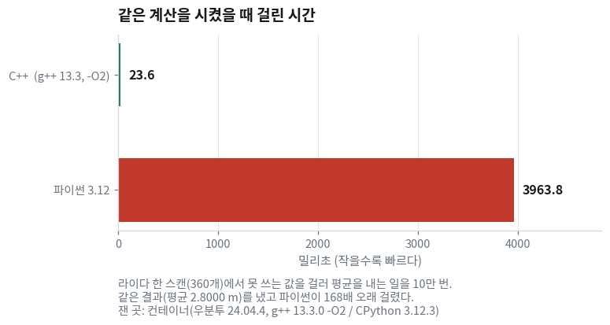
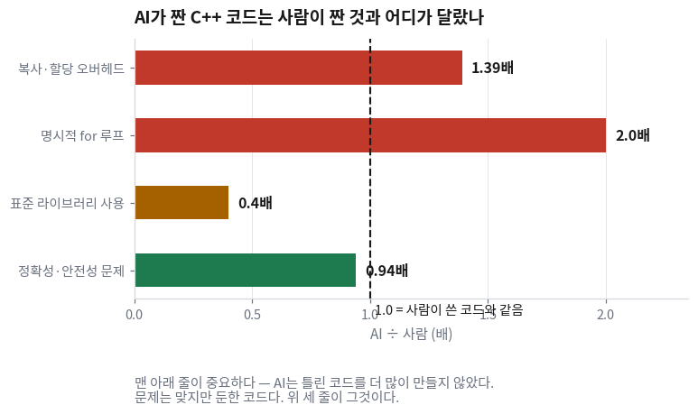

오늘부터 아홉 번은 C++을 본다. 그런데 첫 시간에 문법을 하나도 다루지 않는다.
"왜 이걸 배우느냐"에 대답하지 못하면 나머지 여덟 번이 그냥 문법 암기가 되기 때문이다.
이 질문에 "C++이 빠르니까"라고 답하는 것은 답이 아니다. 얼마나 빠른지를 모르면 판단할 수가 없다.
그래서 오늘은 같은 계산을 C++과 파이썬으로 각각 짜서 실제로 재는 것부터 시작한다.
자료에 나오는 숫자는 전부 그렇게 얻은 것이다.
두 번째 질문이 더 중요하다. AI가 코드를 짜 주는 시대에 C++을 아는 것이 무슨 소용인가.
실제 회사의 C++ 코드 1천만 줄을 1년간 추적한 연구가 있다.
거기서 나온 결론 한 줄이 이 강의 2부 전체의 뼈대다 —
AI는 틀린 코드를 더 많이 만들지 않았다. 문제는 맞지만 둔한 코드였다.
한 장 요약 — 오늘 남는 것은 숫자 네 개다
무엇을 먼저 볼지: 맨 왼쪽 숫자 네 개만 외우면 오늘 수업은 남는다. 나머지는 그 숫자를 설명하는 이야기다.
숫자
무엇을 잰 것인가
그래서 무엇이 달라지나
168배
같은 계산(라이다 값 360개를 걸러 평균, 10만 번)을 C++과 파이썬으로 각각 돌린 시간의 비
시간 제약이 걸리는 콜백을 C++로 쓰는 이유다
200 ms
라이다가 초당 5번 들어올 때 한 스캔에 쓸 수 있는 시간
내가 짠 코드는 이 안에 끝나야 한다. 넘으면 밀린다
1.39 / 2 / 0.4배
AI가 짠 C++ 코드가 사람이 짠 것과 갈라진 세 자리 — 복사·직접 루프·표준 라이브러리
11회(복사와 이동)와 13회(STL)가 2부의 중심인 이유다
0.94배
AI 코드의 정확성·안전성 문제 발생률 ÷ 사람 코드의 발생률
AI는 틀린 코드를 더 많이 만들지 않는다. 그러니 "버그 잡기"는 오늘의 논지가 아니다
해석: 첫 줄과 마지막 줄을 같이 읽어야 오늘의 논지가 나온다.
C++이 필요한 이유는 속도고, C++을 사람이 알아야 하는 이유는 AI가 속도를 놓친다는 것이다.
두 이유는 다른 것이다. 앞의 것만 있으면 "AI에게 시키면 되지 않나"로 끝난다.
① 같은 일을 시켰더니 파이썬이 168배 오래 걸렸다 🔴 사람이 한다
무엇을 알고 싶은 건가
로봇 위에 올릴 프로그램의 언어를 고르려고 한다.
판단 기준이 필요한데, "C++이 빠르다"는 말은 기준이 아니다.
얼마나 빠른지, 그리고 그 차이가 로봇에서 문제가 되는 크기인지를 알아야 고를 수 있다.
느낌과 평판으로는 왜 안 되나
인터넷에서 "파이썬이 C++보다 몇 배 느리다"는 숫자는 10배부터 1000배까지 제각각이다.
무엇을 어떻게 쟀는지가 다 다르기 때문이다.
행렬 곱셈처럼 무거운 계산 한 방을 재면 파이썬도 별로 안 느리다.
안쪽이 이미 C로 짜여 있는 라이브러리(numpy 같은 것)가 대신 계산하기 때문이다.
반대로 값 하나하나를 파이썬 문법으로 훑는 계산을 재면 차이가 크게 벌어진다.
우리가 로봇에서 하는 일은 두 번째 쪽이다.
라이다가 준 거리 값 360개를 하나씩 보면서 쓸 만한지 판단하고, 골라내고, 평균을 낸다.
그래서 그 계산을 그대로 두 언어로 짜서 쟀다.
재는 데 쓴 C++ 코드
라이다 한 스캔(값 360개)을 흉내내고, 못 쓰는 값을 걸러 평균을 내는 일을 10만 번 반복한다.
// 6회 — 왜 아직도 C++인가
// 라이다 한 스캔(360개)을 받아 유효값만 걸러 평균을 내는 일을
// 10만 번(= 라이다 5Hz로 약 5.5시간 분량) 반복하고 걸린 시간을 잰다.
#include <chrono>
#include <cmath>
#include <cstdio>
#include <vector>
int main()
{
const int N = 360;
const int LOOPS = 100000;
// 라이다 한 스캔을 흉내낸다. 10개마다 하나씩 측정 실패(inf)를 섞는다.
std::vector<float> ranges(N);
for (int i = 0; i < N; ++i) {
ranges[i] = (i % 10 == 0) ? INFINITY : 0.2f + 0.02f * static_cast<float>(i % 300);
}
🆕 이 코드에서 처음 나오는 것
std::vector<float> ranges(N)
실수 값을 N개 담는 그릇을 하나 만든다.
여기서는 라이다가 한 바퀴 돌며 잰 거리 360개를 담는 데 썼다.
꺾쇠 안의 float이 "무엇을 담는 그릇인지"를 말한다.
INFINITY
"무한대"라는 뜻의 실수 값이다.
여기서는 라이다가 측정에 실패한 방향을 흉내내는 데 썼다.
실제 라이다도 값이 안 잡히면 이 값을 채워 보낸다.
static_cast<float>(x)
정수를 실수로 바꿔 달라고 명시적으로 적는 것이다.
그냥 두어도 되지만, 이렇게 적어 두면 "일부러 바꾼 것"임이 코드에 드러난다.
#include <chrono> 같은 맨 위 네 줄
남이 만들어 둔 것을 쓰려면 그 이름들을 먼저 가져다 붙여야 한다.
여기서는 시계(chrono)·수학 함수(cmath)·화면 출력(cstdio)·그릇(vector) 넷을 가져왔다.
이 네 줄이 없으면 아래 코드는 한 줄도 컴파일되지 않는다.
제대로 다루는 곳: 7회(#include와 꺾쇠 <> 읽는 법) · 12회(std::vector)
다음이 실제로 시간을 재는 부분이다.
const auto t0 = std::chrono::steady_clock::now();
double sink = 0.0; // 최적화로 계산이 통째로 날아가는 것을 막는다
for (int k = 0; k < LOOPS; ++k) {
double sum = 0.0;
int cnt = 0;
for (int i = 0; i < N; ++i) {
const float r = ranges[i];
if (std::isfinite(r) && r >= 0.16f && r <= 8.0f) {
sum += r;
++cnt;
}
}
sink += (cnt > 0) ? sum / cnt : 0.0;
}
const auto t1 = std::chrono::steady_clock::now();
const double ms = std::chrono::duration<double, std::milli>(t1 - t0).count();
std::printf("C++ : %d회 반복에 %.1f ms (한 스캔당 %.4f ms)\n", LOOPS, ms, ms / LOOPS);
std::printf(" 평균 거리 %.4f m\n", sink / LOOPS);
return 0;
}
🆕 이 코드에서 처음 나오는 것
std::chrono::steady_clock::now()
지금 시각을 읽어 오는 시계다. 뒤로 가지 않는 시계라서 시간 차를 재는 데 쓴다.
여기서는 계산 앞뒤로 한 번씩 읽어 그 차이를 걸린 시간으로 삼았다.
두 시각의 차이를 밀리초 숫자로 꺼낸다.
t1 - t0만으로는 단위가 안 정해져 있어서 이렇게 단위를 지정해 꺼낸다.
std::isfinite(r)
그 값이 정상적인 숫자인지 묻는다. 무한대나 "숫자가 아님"이면 거짓이 된다.
여기서는 라이다가 측정에 실패한 방향을 버리는 데 썼다.
std::printf("... %.1f ...", ms)
화면에 찍는 함수다. %.1f는 "실수를 소수점 한 자리까지"라는 뜻의 자리 표시다.
const auto t0 = ...
두 조각이다. auto는 "타입을 여기 안 적을 테니 컴파일러가 채우라"는 뜻이고,
const는 "이 값은 다시 안 바꾼다"는 표시다.
시계가 돌려주는 값의 타입 이름이 길어서 여기서는 auto로 넘겼다.
제대로 다루는 곳: 7회(auto·const) · 13회(라이다 값에 섞인 inf·NaN 거르기)
재는 데 쓴 파이썬 코드 — 한 줄 한 줄이 같은 일을 한다
# 6회 — 같은 계산의 파이썬 판. scan_filter.cpp 와 한 글자도 다르지 않은 일을 한다.
import math
import time
N = 360
LOOPS = 100000
ranges = [math.inf if i % 10 == 0 else 0.2 + 0.02 * (i % 300) for i in range(N)]
t0 = time.perf_counter()
sink = 0.0
for _ in range(LOOPS):
s = 0.0
cnt = 0
for r in ranges:
if math.isfinite(r) and 0.16 <= r <= 8.0:
s += r
cnt += 1
sink += (s / cnt) if cnt else 0.0
t1 = time.perf_counter()
ms = (t1 - t0) * 1000.0
print("Python: %d회 반복에 %.1f ms (한 스캔당 %.4f ms)" % (LOOPS, ms, ms / LOOPS))
print(" 평균 거리 %.4f m" % (sink / LOOPS))
무엇을 먼저 볼지: 오른쪽 두 열이 같은 줄에 있는지만 확인한다. 하는 일이 같다는 것을 보이려는 표다.
하는 일
C++
파이썬
360칸짜리 거리 배열 만들기
std::vector<float> ranges(N)
ranges = [...]
측정 실패를 섞기
INFINITY
math.inf
시각 읽기
steady_clock::now()
time.perf_counter()
정상 숫자인지 확인
std::isfinite(r)
math.isfinite(r)
범위 안인지 확인
r >= 0.16f && r <= 8.0f
0.16 <= r <= 8.0
더하고 세기
sum += r; ++cnt;
s += r; cnt += 1
반복 횟수
10만 번
10만 번
해석: 알고리즘이 다르지 않다. 자료구조도 다르지 않다. 반복 횟수도 같다.
다른 것은 언어뿐이다. 그래서 아래 숫자 차이는 전부 언어에서 온 것이다.
C++ 소스를 실행 파일로 바꿔 주는 프로그램이다(컴파일러).
파이썬은 이 단계가 없고 바로 실행되지만, C++은 반드시 한 번 거친다.
-std=c++17
"C++ 문법은 2017년판 기준으로 읽어 달라"는 요구다.
ROS 2가 C++17을 쓰므로 이 과목은 전부 이 값으로 맞춘다.
-O2
"속도가 나게 최적화해 달라"는 요구다. 알파벳 대문자 오(O)와 숫자 2다.
이것을 빼면 같은 코드가 훨씬 느려진다 — 실습에서 직접 확인한다.
-o scan_filter
만들어진 실행 파일의 이름을 정한다. 안 적으면 a.out이라는 이름이 된다.
제대로 다루는 곳: 9회(빌드 시스템 — 파일이 여러 개가 되면 이 한 줄로는 안 된다)
C++ : 100000회 반복에 23.6 ms (한 스캔당 0.0002 ms)
평균 거리 2.8000 m
Python: 100000회 반복에 3963.8 ms (한 스캔당 0.0396 ms)
평균 거리 2.8000 m
평균 거리가 둘 다 2.8000 m다. 같은 답을 냈다는 뜻이다.
같은 답을 내는 데 23.6 밀리초와 3963.8 밀리초가 걸렸다. 168배다.

위 막대가 거의 보이지 않는다는 것이 이 그림의 전부다.
두 막대는 같은 축 위에 있다. C++ 막대(23.6)는 파이썬 막대(3963.8) 옆에서 선 하나로 눌린다.
잰 곳: 컨테이너(우분투 24.04.4 LTS, g++ 13.3.0 -O2, CPython 3.12.3).
② 168배가 로봇에서 무슨 뜻인지는 예산표로 봐야 한다 🔴 사람이 한다
무엇을 알고 싶은 건가
168배라는 숫자만으로는 아직 판단이 안 선다.
168배가 문제가 되는 크기인가를 알아야 한다. 그러려면 비교 대상이 필요하다.
비교 대상은 라이다가 정해 준다
이 과목에서 쓰는 라이다(LDS-02)는 초당 5번 값을 보낸다.
그러면 스캔과 스캔 사이의 간격은 1초 ÷ 5 = 0.2초 = 200 밀리초다.
내가 짠 코드가 한 스캔을 처리하는 데 쓸 수 있는 시간이 200 밀리초다.
이것을 넘기면 다음 스캔이 이미 와 있고, 그다음 스캔은 줄을 선다.
숫자를 넣어 본다
무엇을 먼저 볼지: 맨 오른쪽 열이 "200밀리초 예산의 몇 퍼센트를 썼나"다.
무엇
C++
파이썬
200 ms 중 몇 %
스캔 한 번 걸러 평균 내기 (오늘 잰 것)
0.0002 ms
0.0396 ms
0.0001% / 0.02%
실제 프로젝트 처리가 이것의 100배쯤 무겁다고 잡으면
0.02 ms
3.96 ms
0.01% / 2%
로봇 위 컴퓨터가 이 서버보다 10배쯤 느리다고 잡으면
0.2 ms
39.6 ms
0.1% / 20%
여기에 콘 찾기·좌표 변환·제어까지 다섯 가지가 겹치면
1 ms
198 ms
0.5% / 99%
해석: 뒤의 세 줄에 붙은 「100배」·「10배」·「다섯 가지」는 내가 둔 가정이다.
잰 값이 아니다. 그런데 어떤 가정을 넣어도 168배라는 비율은 그대로 곱해진다.
첫 줄만 보면 파이썬도 예산의 0.02%밖에 안 쓴다. 넉넉하다.
문제는 계산 하나가 아니라 계산이 겹칠 때다. C++은 마지막 줄에서도 0.5%지만 파이썬은 99%다.
예산을 넘기면 무슨 일이 일어나나
처리가 200 밀리초를 넘기면 프로그램이 죽지 않는다. 그게 더 나쁘다.
들어온 메시지가 줄을 서고, 로봇은 몇 초 전에 본 장면을 보며 지금 결정을 내린다.
눈앞에 콘이 있는데 로봇이 그냥 지나가는 상황이 그렇게 생긴다.
이 이야기는 22회에서 실제로 콜백에 걸리는 시간을 재면서 다시 만난다.
지금은 "밀린다는 것은 느려지는 게 아니라 과거를 보게 되는 것"이라는 것만 알아 두면 된다.
그래서 코드를 받았을 때 물어볼 것은 "잘 도나"가 아니라 "얼마나 걸리나"다.
이 계산이 한 번에 얼마나 걸리는지 std::chrono로 재는 코드를 붙여 줘. 결과를 밀리초로 찍고, 재는 구간이 어디부터 어디까지인지 주석으로 표시해 줘.
③ 그래서 파이썬을 쓰지 말라는 결론이 아니다 🟡 맡기되 검사
ROS 2는 파이썬을 정식으로 지원한다.
C++용 라이브러리(rclcpp)와 파이썬용 라이브러리(rclpy)가 둘 다 공식으로 있고,
한 로봇 안에서 두 언어로 만든 프로그램이 서로 메시지를 주고받는다.
둘 중 하나를 고르는 문제가 아니라, 어디에 무엇을 쓰느냐의 문제다.
무엇을 먼저 볼지: 맨 오른쪽 열의 「시간 제약이 있나」가 갈림길이다.
무엇을 만드나
보통 무엇으로 쓰나
왜 — 시간 제약이 있나
라이다 콜백, 주행 제어, 콘 찾기
C++
있다. 다음 스캔이 오기 전에 끝나야 한다
실험용 스크립트, 한 번 쓰고 버릴 것
파이썬
없다. 빨리 쓰는 쪽이 이득이다
기록 파일 분석, 그래프 그리기
파이썬
없다. 끝나기를 기다리면 된다
딥러닝 모델 학습·시각화
파이썬
없다. 게다가 무거운 계산은 안쪽이 이미 C로 짜여 있다
설정 파일 만들기, 실행 순서 정하기
파이썬
없다. ROS 2의 실행 파일도 파이썬으로 쓴다
해석: 이 강의가 C++을 고른 이유는 "파이썬이 나쁘다"가 아니다.
이 과목의 기말 프로젝트가 첫 줄에 해당하기 때문이다.
라이다가 값을 보내면 그 자리에서 판단해 바퀴에 명령을 내려야 한다.
나머지 네 줄짜리 일을 하게 되면 그때는 파이썬을 쓰는 것이 맞다.
⚠️ "파이썬은 느리다"를 잘못 외우면 생기는 오해
파이썬으로 큰 행렬을 곱하면 C++과 속도가 거의 같다.
계산을 파이썬이 하지 않고 안쪽이 C로 짜인 라이브러리(numpy 등)가 대신 하기 때문이다.
"파이썬이 168배 느리다"가 아니라 "파이썬 문법으로 값을 하나씩 훑는 일이 168배 느리다"가 맞는 문장이다.
그런데 라이다 값에서 콘을 찾는 일은 행렬 곱 한 방으로 안 떨어진다.
점을 순서대로 훑으면서 "이 점이 앞 점과 가까운가"를 계속 물어야 한다.
하필 파이썬이 가장 불리한 모양의 계산이다.
언어를 고르는 일 자체를 에이전트에게 물어볼 수도 있다. 다만 시간 제약을 문장에 넣어야 쓸 만한 답이 온다.
라이다가 초당 5번 들어오고, 그 콜백 안에서 값 360개를 걸러 콘 위치를 계산해야 해. 한 번 처리가 200밀리초 안에 끝나야 해. C++과 파이썬 중 무엇이 맞는지 근거를 들어 알려 줘.
C++은 박사논문을 쓰다 생긴 언어다 🟢 읽을거리
이름이 농담인 언어 (15분 · 건너뛰어도 됩니다)
① 1970년대 말, 케임브리지의 박사과정 학생
덴마크 사람 비야네 스트롭스트룹(Bjarne Stroustrup)은 케임브리지에서 박사논문을 쓰고 있었다.
분산 시스템을 시뮬레이션해야 했는데, 쓰던 언어가 시뮬라(Simula)였다.
시뮬라는 클래스를 가진 최초의 언어였다. 큰 프로그램을 정리하기에 이만한 것이 없었다.
그런데 너무 느렸다. 논문에 필요한 시뮬레이션이 끝나지 않았다.
결국 그는 코드를 훨씬 낮은 수준의 언어로 처음부터 다시 짰다.
정리는 잘 되는데 느린 언어와, 빠른데 정리가 안 되는 언어 사이에서 한 번 데인 것이다.
② 그래서 둘 다 갖기로 했다
1979년 벨 연구소에 들어간 그는 "시뮬라의 정리 능력 + C의 속도"를 목표로 잡는다.
새 언어를 만들지 않고, 이미 있는 C에 클래스를 붙이는 쪽을 골랐다.
기존 C 코드가 그대로 돌아가야 사람들이 쓸 것이라고 봤기 때문이다.
이름도 그대로 "C with Classes"였다. 설명이지 이름이 아니다.
③ 여기가 재미있다 — 이름은 동료가 지었다
1983년, 릭 마시티(Rick Mascitti)라는 동료가 이름을 하나 제안한다.
C에는 변수를 하나 늘리는 ++라는 연산자가 있다.
거기에 착안해 C++. "C를 하나 늘린 것"이라는 뜻이다.
언어의 이름 자체가 그 언어의 문법으로 된 농담이다.
농담으로 지은 이름이 40년 넘게 업계 표준 이름으로 남았다.
④ 그래서 지금 우리 손에 남은 것
C++이 복잡한 이유는 버리지 않고 더하기만 했기 때문이다.
옛날 C 코드가 그대로 돌아가야 했고, 옛날 C++ 코드도 그대로 돌아가야 했다.
그래서 새 문법이 들어와도 옛 문법이 안 없어진다.
같은 일을 하는 방법이 여러 개다.
포인터를 비우는 방법이 0·NULL·nullptr 셋이고,
값을 초기화하는 방법이 ()와 {}와 = 셋이다. 전부 지금도 컴파일된다.
그리고 바로 그 지점에서 AI가 평범한 쪽을 고른다.
방법이 여러 개인 언어에서 AI는 "인터넷에 가장 많은 것"을 고르는데,
인터넷에 가장 많은 C++ 코드는 최적화된 코드가 아니라 오래된 코드다.
다음 절이 그 이야기다.
⑤ 숫자로 확인한다
45년. 1979년에 시작한 언어다. 그동안 버려진 문법이 거의 없다.
표준 개정 7번. C++98 · 03 · 11 · 14 · 17 · 20 · 23. 개정마다 문법이 늘었고 줄지 않았다.
168배. 그 복잡함을 감수하고 얻는 것이 이 숫자다 —
오늘 잰 같은 계산에서 C++ 23.6 ms, 파이썬 3963.8 ms.
잰 곳: 컨테이너(우분투 24.04.4 LTS, g++ 13.3.0 -O2, CPython 3.12.3)
복잡함은 비용이고 속도는 이득이다. 이 강의는 그 거래를 받아들인 자리에 서 있다.
⑥ 출처
Bjarne Stroustrup, A History of C++: 1979–1991 — stroustrup.com/hopl2.pdf
Wikipedia — C++, C with Classes, Simula
④ AI는 틀린 코드가 아니라 둔한 코드를 준다 🔴 사람이 한다
여기까지는 "왜 C++인가"였다. 이제 "왜 사람이 C++을 알아야 하는가"다.
AI가 C++ 코드를 잘 짜 준다면 사람이 배울 이유는 크게 줄어든다.
그래서 AI가 짠 C++ 코드가 사람이 짠 것과 어디가 다른지를 본다.
근거로 삼는 것은 실제 회사의 C++ 코드 약 1천만 줄을 1년간 추적한 연구다.
같은 회사, 같은 코드베이스에서 AI가 만든 코드와 사람이 만든 코드를 나눠 세었다.

가운데 세로 점선(1.0)이 "사람이 쓴 코드와 같음"이다.
점선보다 오른쪽으로 나간 막대가 AI가 더 많이 한 것이고, 왼쪽이 덜 한 것이다.
맨 아래 막대가 점선 왼쪽에 있는 것을 눈여겨본다.
무엇을 먼저 볼지: 맨 아래 줄부터 읽는다. 나머지 세 줄의 뜻이 거기서 정해진다.
무엇
AI ÷ 사람
무슨 뜻인가
어디서 다루나
복사·할당 오버헤드
1.39배
옮기거나 빌려 봐도 될 것을 통째로 복사한다
11회 복사와 이동
명시적 for 루프
약 2배
이미 표준에 있는 일을 직접 루프로 짠다
13회 STL 알고리즘
표준 라이브러리 사용
0.4배
20년 갈고닦은 표준 함수를 사람의 40%밖에 안 쓴다
13회 STL 알고리즘
정확성·안전성 문제
0.94배
사람보다 오히려 적다. 틀린 코드를 더 만들지 않는다
— (오늘의 논지가 아니다)
해석: 마지막 줄이 이 표의 핵심이다.
AI 코드를 검사하는 일이 "버그 찾기"라면 사람이 할 일은 별로 없다. AI가 사람보다 잘한다.
그런데 위 세 줄은 다르다. 컴파일도 되고, 실행도 되고, 답도 맞는데 둔하다.
둔한 코드는 컴파일러가 잡아 주지 않는다. 테스트도 통과한다.
이것이 사람이 읽어야만 잡히는 종류의 문제다. 2부 아홉 회차가 여기에 걸려 있다.
왜 하필 C++에서 이런 일이 생기나
앞의 이야기와 이어진다. C++은 같은 일을 하는 방법이 여러 개다.
그리고 AI는 인터넷에 있는 코드를 재현한다.
인터넷에 있는 C++ 코드는 최적화된 코드보다 옛날 교과서 코드가 훨씬 많다.
그래서 "맞기는 한데 15년 전 방식"인 코드가 나온다.
파이썬에는 이 문제가 훨씬 덜하다. 방법이 대체로 하나뿐이기 때문이다.
그래서 사람이 하는 일은 이것이다
이 코드에서 불필요한 복사가 일어나는 자리가 있으면 짚어 줘. 값으로 받는 함수 인자와, 통째로 대입하는 자리를 특히 봐 줘.
이 문장을 쓰려면 "복사가 비싸다"는 것을 알아야 한다.
그것이 사람이 C++을 아는 이유다. 코드를 짜기 위해서가 아니라 무엇을 요구할지 알기 위해서다.
⑤ 2부 아홉 회차는 그 둔함을 걷어내는 순서로 짜였다 🟢 맡긴다
무엇을 먼저 볼지: ★이 붙은 두 줄(11회·13회)이 위 표의 세 줄에 대응한다.
회
제목
다루는 것
왜 여기 있나
6
왜 아직도 C++인가 📖
오늘
나머지 여덟 회차의 이유
7
코드를 읽기 위한 최소 장비
auto, &, const, ::, ->, <>, #include, nullptr
읽지 못하면 검사도 못 한다
8
클래스 — 노드가 상태를 갖는 방식
멤버 변수·함수, 생성자·소멸자, 멤버 초기화 리스트, 헤더/소스 분리
ROS 2 코드는 전부 클래스다
9
빌드 시스템 📖
컴파일과 링크, CMake, 빌드 오류 3단계 읽기
파일이 둘 이상이면 필요해진다
10
상속·다형성과 RAII
virtual, override, 가상 소멸자, 스코프와 수명
AI가 가상 소멸자를 자주 빠뜨린다
11★
복사와 이동
값 전달 vs 참조 전달, const &, std::move
위 표 1.39배 줄
12
스마트 포인터와 컨테이너
unique_ptr, shared_ptr, std::vector, reserve()
ROS 2 콜백 인자가 전부 스마트 포인터다
13★
STL 알고리즘 📖
min_element, count_if, copy_if, sort 등
위 표 2배·0.4배 줄
14
람다·const·C++17
람다와 캡처, const 멤버 함수, std::optional
13회 코드에 이미 나와 있던 문법
해석: 문법을 쉬운 것부터 어려운 것 순으로 늘어놓지 않았다.
고칠 일이 많은 순서로 놓았다.
7회가 맨 앞인 것도 같은 이유다 — 코드를 읽을 줄 알아야 나머지 여덟 회차의 「검사」가 가능해진다.
🧪 실습 — 내 노트북에서는 몇 배가 나오나 🟢 맡긴다
① 이걸 해 보면 무엇을 알게 되나
168배가 내 컴퓨터에서도 나오는지 확인한다.
그리고 -O2 하나를 빼면 같은 C++ 코드가 얼마나 느려지는지 본다.
숫자를 남이 준 대로 믿지 않는 연습이다.
② 준비물
WSL 우분투 터미널 하나
VS Code (WSL에 연결된 상태)
g++와 python3 — 없으면 3단계에서 깐다
③ 절차
(2분) 작업 폴더를 만들고 들어간다.
mkdir -p ~/robot_ws/l06
cd ~/robot_ws/l06
code .
마지막 줄이 그 폴더를 VS Code로 여는 명령이다.
(3분) 파일 두 개를 만들고 이 자료의 코드를 붙여 넣는다.
VS Code에서 scan_filter.cpp와 scan_filter.py를 새로 만든다.
위 ①절의 코드 블록을 그대로 복사해 붙인다. 타이핑하지 않는다.
(2분) 컴파일러와 파이썬이 있는지 확인한다.
g++ --version
python3 --version
둘 중 하나라도 "command not found"가 나오면 아래 프롬프트를 쓴다.
내 WSL 우분투에 g++ 과 python3 가 없어. 설치해 줘. sudo 가 붙는 명령은 실행하기 전에 나에게 먼저 보여 줘.
ROS 2가 C++17을 기준으로 만들어져 있다. 그래서 이 과목의 컴파일 명령은 전부 -std=c++17이다.
C++20의 문법을 쓰면 지금 쓰는 ROS 2 코드와 안 맞을 수 있다.
AI에게 코드를 시킬 때 "C++17 기준으로 써 줘"라고 한 줄 붙이면 이 문제가 대체로 사라진다.
C++을 대체하려는 언어들 — Rust와 Go는 왜 아직 로봇에 안 왔나
C++의 가장 큰 약점은 메모리 안전성이다. 잘못 쓰면 프로그램이 엉뚱한 자리를 읽고 쓴다.
Rust는 그 문제를 컴파일러가 잡아 주도록 설계된 언어이고, Go는 개발 편의성을 크게 올린 언어다.
둘 다 실제로 많이 쓰인다.
그런데 로봇 쪽은 아직 C++이다. 이유는 언어의 좋고 나쁨이 아니다.
로봇에 필요한 라이브러리 — 센서 드라이버, 좌표 변환, 지도 작성, 시뮬레이터 — 가
이미 전부 C++로 쓰여 있기 때문이다.
새 언어로 갈아타려면 그 20년치를 다시 써야 한다.
ROS 2에도 Rust 지원을 만드는 시도가 있지만 아직 공식이 아니다.
왜 -O2 하나로 6배가 나나
-O2를 붙이지 않으면 컴파일러는 소스에 적힌 그대로 기계어를 만든다.
값을 읽고, 계산하고, 다시 메모리에 넣고, 다음 줄에서 또 읽는다.
-O2를 붙이면 컴파일러가 결과가 같아지는 선에서 코드를 다시 짠다.
반복해서 읽는 값은 레지스터에 붙잡아 두고, 매번 같은 결과가 나오는 계산은 루프 밖으로 빼고,
짧은 함수는 부르는 자리에 통째로 펼쳐 넣는다.
우리가 잰 값은 146.0 ms → 23.6 ms였다.
같은 소스, 같은 컴퓨터, 옵션 세 글자 차이다.
"C++이 파이썬보다 빠르다"는 말이 성립하려면 이 세 글자가 붙어 있어야 한다는 뜻이기도 하다.
잰 곳: 컨테이너(우분투 24.04.4 LTS, g++ 13.3.0)
C++의 단점 네 가지 — 알고 시작하는 편이 낫다
어렵다. 문법을 전부 아는 사람이 없다고 할 정도로 크다. 이 강의가 문법을 다 가르치지 않는 이유가 이것이다.
빌드 시간이 있다. 파이썬은 저장하고 바로 돌리지만 C++은 매번 컴파일을 기다린다. 헤더를 많이 포함할수록 길어진다.
파일이 두 개씩이다. 클래스 하나에 헤더(.hpp)와 소스(.cpp)가 따로 있고 둘을 맞춰 줘야 한다. 8회에서 다룬다.
남의 라이브러리를 가져오기 불편하다. 파이썬은 pip 한 줄이면 되는데 C++은 직접 받아 빌드해야 하는 경우가 많다. 9회에서 다룬다.
2·3·4번은 이 강의에서 실제로 겪게 된다. 겪은 직후에 해결책을 준다.
1번은 겪지 않게 하려고 이 강의가 존재한다.